<mat-toolbar>
  <button mat-icon-button class="example-icon"
          (click)="toggleMenu($event); $event.stopPropagation()"
          aria-label="Example icon-button with menu icon">
    <mat-icon>menu</mat-icon>
  </button>
  
</mat-toolbar>
